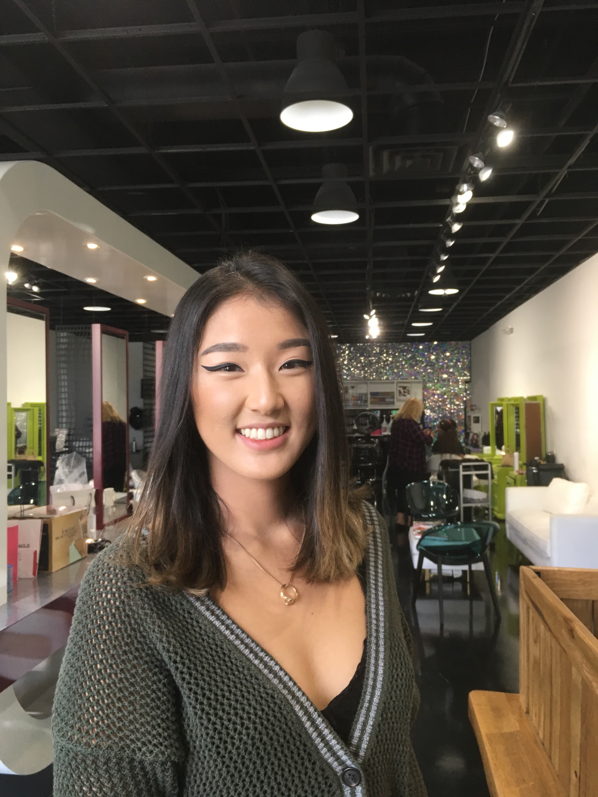

About Me

I'm a senior at the University of Massachusetts Amherst in my last semester. I'm pursuing a double major in English and Economics as well as taking coursework for a certificate in Professional Writing and Technical Communication. I have strong interests in research, technical writing, and policy/data analysis.
When I'm not in class, I like to dedicate my free time to my extracurricular leadership roles on campus. I was president of the Adopted Student Advisory Panel during the fall semester of 2018 and their treasurer during the fall semester of 2019. The Adopted Student Advisory Panel is a registered student organization that advocates for adoptees and adoptee families and works to build a safe and accepting community. As an adoptee, I was compelled to become involved in this student organization when I transferred to UMass. Being their president and working with my peers and Rudd Adoption Research taught me the importance of community, team building, and public outreach.
Visit my LinkedIn!